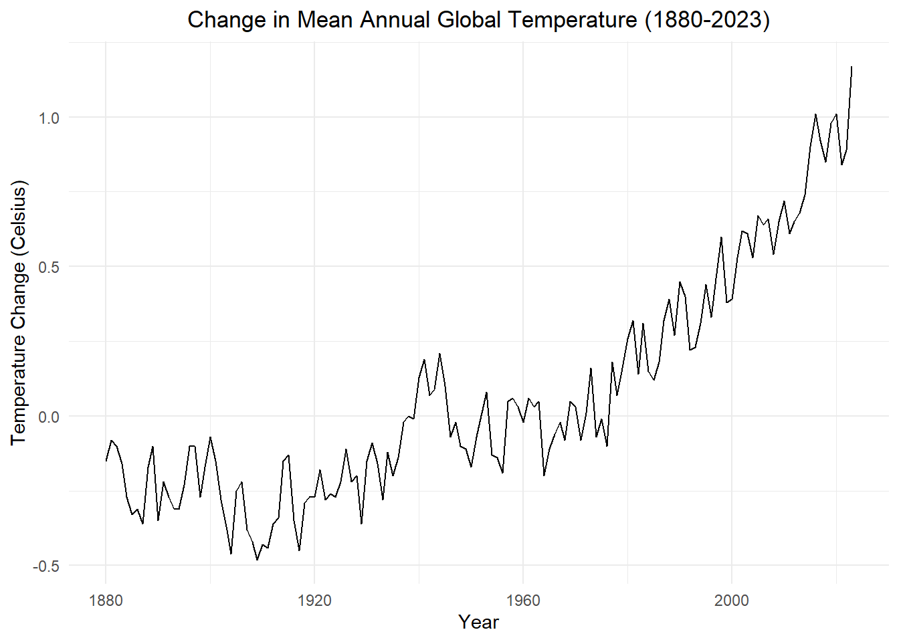
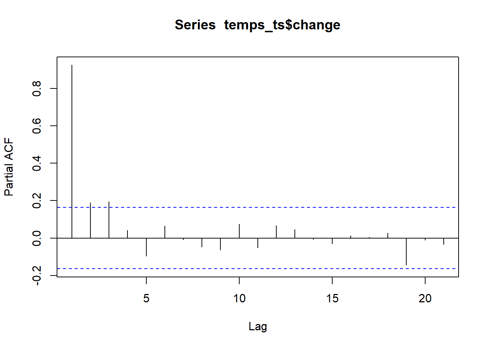
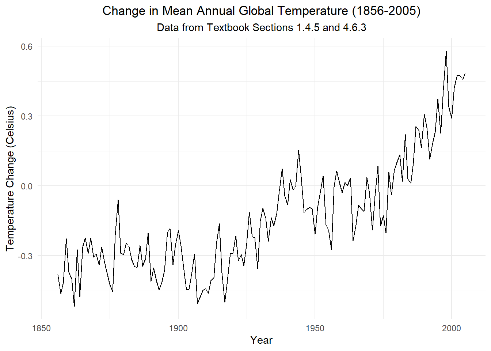

Fit time series models to data and interpret fitted parameters
Fit an \(AR(p)\) model to simulated data
Explain the difference between parameters of the data generating process and estimates
Calculate confidence intervals for AR coefficient estimates
Interpret AR coefficient estimates in the context of the source and nature of historical data
Check model adequacy using diagnostic plots like correlograms of residuals
Compare AR fitted models to an underlying data generating process
Explain the limitations of stochastic model fitting as evidence in favor or against real world arguments.
Preparation
Read Sections 4.6-4.7
Learning Journal Exchange (10 mins)
Review another student’s journal
What would you add to your learning journal after reading another student’s?
What would you recommend the other student add to their learning journal?
Sign the Learning Journal review sheet for your peer
Class Activity: Fitting a Simulated \(AR(1)\) Model with Zero Mean (10 min)
We will demonstrate how AR models are fitted via simulation. We will fit two different \(AR(1)\) models and an \(AR(2)\) model. The advantage of using simulation is that we know how the time series was constructed. So, we know the model that was used and the actual values of the parameters in that model. We can then see how close our estimated parameter values are to the true values.
Simulate an \(AR(1)\) Time Series
In this simulation, we first simulate data from the \(AR(1)\) model \[
x_t = 0.75 ~ x_{t-1} + w_t
\] where \(w_t\) is a white noise process with variance 1.
The estimate of the parameter \(\alpha_1\) (i.e. the fitted value of the parameter \(\alpha_1\)) is \(\hat \alpha_1 = 0.72\).
When R fits an AR model, the mean of the time series is subtracted from the data before the parameter values are estimated. If R detects that the mean of the time series is not significantly different from zero, it is omitted from the output.
Because the mean is subtracted from the time series before the parameter values are estimated, R is using the model \[
z_t = \alpha_1 ~ z_{t-1} + w_t
\] where \(z_t = x_t - \alpha_0\) and \(\alpha_0\) is the mean of the time series.
Check Your Understanding
Answer the following questions with your partner.
Use the expression for \(z_t\) above to solve for \(x_t\) in terms of \(x_{t-1}\), \(\alpha_0\), \(\alpha_1\), and \(w_t\).
What does your model reduce to when \(\alpha_0 = 0\)?
Explain to your partner why this correctly models a time series with mean \(\alpha_0\).
We replace the parameter \(\alpha_0\) with its estimator \(\hat \alpha_0 = \bar x\). We also replace \(\alpha_1\) with the fitted value from the output \(\hat \alpha_1\). This gives us the fitted model: \[
\hat x_t = \bar x + \hat \alpha_1 ~ (x_{t-1} - \bar x)
\]
Even though R does not report the parameter for the mean of the process, \(\hat \alpha_0 = 0.019\), it is not significantly different from zero. One could argue that we should not use a model that contains the mean and instead focus on a simple fitted model that has only one parameter:
\[
\hat x_t = 0.72 ~ x_{t-1}
\]
Confidence Interval for the Model Parameter
The P-value given above tests the hypothesis that \(\alpha_1=0\). This is not helpful in this context. We are interested in the plausible values for \(\alpha_1\), not whether or not it is different from zero. For this reason, we consider a confidence interval and disregard the P-value.
We can compute an approximate 95% confidence interval for \(\alpha_1\) as: \[
\left(
\hat \alpha_1 - 2 \cdot SE_{\hat \alpha_1}
, ~
\hat \alpha_1 + 2 \cdot SE_{\hat \alpha_1}
\right)
\] where \(\hat \alpha_1\) is our parameter estimate and \(SE_{\hat \alpha_1}\) is the standard error of the estimate. Both of these values are given in the R output.
So, our 95% confidence interval for \(\alpha_1\) is: \[
\left(
0.72 - 2 \cdot 0.022
, ~
0.72 + 2 \cdot 0.022
\right)
\] or \[
\left(
0.676
, ~
0.764
\right)
\] Note that the confidence interval contains \(\alpha_1 = 0.75\), the value of the parameter we used in our simulation. The process of estimating the parameter worked well. In practice, we will not know the value of \(\alpha_1\), but the confidence interval gives us a reasonable estimate of the value.
Residuals
For an \(AR(1)\) model where the mean of the time series is not statistically significantly different from 0, the residuals are computed as \[\begin{align*}
r_t
&= x_t - \hat x_t \\
&= x_t - \left[ 0.72 ~ x_{t-1} \right]
\end{align*}\]
We can easily obtain these residual values in R:
The variance of the residuals is \(0.982\). This is very close to the actual value used in the simulation: \(\sigma^2 = 1\).
Class Activity: Fitting a Simulated \(AR(1)\) Model with Non-Zero Mean (10 min)
Simulate an \(AR(1)\) Time Series
It is easy to conceive situations where the mean of an AR model is not zero. The model we have been fitting is \[
x_t = \alpha_0 + \alpha_1 ~ \left( x_{t-1} - \alpha_0 \right) + w_t
\] where \(\alpha_0\) and \(\alpha_1\) are constants, and \(w_t\) is a white noise process with variance \(\sigma^2\).
This model can be simplified by combining like terms. \[\begin{align*}
x_t
&= \alpha_0 + \alpha_1 ~ \left( x_{t-1} - \alpha_0 \right) + w_t \\
&= \underbrace{\alpha_0 - \alpha_1 ~ (\alpha_0)}_{\alpha_0'} + \alpha_1 ~ \left( x_{t-1} \right) + w_t \\
&= \alpha_0' + \alpha_1 ~ \left( x_{t-1} \right) + w_t
\end{align*}\]
Suppose the mean of the \(AR(1)\) process is \(\alpha_0 = 50\). We will set \(\alpha_1 = 0.75\), and \(\sigma^2 = 5\) for this simulation. After specifying these numbers, the model becomes: \[\begin{align*}
x_t
&= 50 + 0.75 ~ ( x_{t-1} - 50 ) + w_t \\
&= 50 - 0.75 ~ ( 50 ) + 0.75 ~ x_{t-1} + w_t \\
&= 12.5 + 0.75 ~ x_{t-1} + w_t
\end{align*}\] where \(w_t\) is a white noise process with variance \(\sigma^2 = 5\).
The estimate of the parameter for the constant (mean) term \(\alpha_0'\) is \(\hat \alpha_0' = 14.091\). The estimate of the parameter \(\alpha_1\) (i.e. the fitted value of the parameter \(\alpha_1\)) is \(\hat \alpha_1 = 0.719\).
Fitting the model \[
x_t = \alpha_0' + \alpha_1 ~ x_{t-1} + w_t
\] we get \[\begin{align*}
\hat x_t
&= \hat \alpha_0' + \hat \alpha_1 ~ x_{t-1} \\
&= 14.091 +
0.719
~ x_{t-1}
\end{align*}\]
Confidence Intervals for the Model Parameters
We can compute approximate 95% confidence intervals for \(\alpha_0'\) and \(\alpha_1\):
\[
\left(
\hat \alpha_i - 2 \cdot SE_{\hat \alpha_i}
, ~
\hat \alpha_i + 2 \cdot SE_{\hat \alpha_i}
\right)
\] where \(\hat \alpha_i\) is our estimate of parameter \(i \in \{0,1\}\), and \(SE_{\hat \alpha_i}\) is the standard error of the respective estimates.
\[
\left(
0.675
, ~
0.763
\right)
\] The confidence interval for \(\alpha_1\) contains \[\alpha_1 = 0.75\]
Both intervals captured the true value used in the simulation. The process of estimating the parameter worked well. In practice, we will not know the value of \(\alpha_1\), but the confidence interval gives us a reasonable estimate of the value. About 95% of the time, the confidence interval will capture the true parameter value.
Residuals
The residuals in this model are computed as \[\begin{align*}
r_t
&= x_t - \hat x_t \\
&= x_t -
\left[
14.091 +
0.719
~ x_{t-1}
\right]
\end{align*}\]
The variance of the residuals is \(4.911\), which is near the actual parameter value: \(\sigma^2 = 5\).
Class Activity: Fitting a Simulated \(AR(2)\) Model (10 min)
Simulate an \(AR(2)\) Time Series
In this section, we will simulate data from the following \(AR(2)\) process: \[
x_t = 2 + 0.5 ~ x_{t-1} + 0.4 ~ x_{t-2} + w_t
\] where \(w_t\) is a discrete white noise process with variance \(\sigma^2 = 9\).
Check Your Understanding
Use the \(AR(2)\) process above to answer the following questions.
Is this \(AR(2)\) process stationary? (Hint: The characteristic polynomial only includes terms that involve \(x_t\).)
Rewrite the model in the form \[
x_t = \alpha_0 + \alpha_1 ~ ( x_{t-1} - \alpha_0) + \alpha_2 ~ ( x_{t-2} - \alpha_0) + w_t
\] Identify the value of each of the coefficients (\(\alpha_0\), \(\alpha_1\), and \(\alpha_2\)).
The estimates of the parameter values (i.e. the fitted values of the parameters) are: \(\hat \alpha_0' = 2.295\), \(\hat \alpha_1 = 0.478\), and \(\hat \alpha_2 = 0.408\). This means that our fitted model can be expressed as:
We can compute an approximate 95% confidence interval for \(\alpha_i\) as: \[
\left(
\hat \alpha_i - 2 \cdot SE_{\hat \alpha_i}
, ~
\hat \alpha_i + 2 \cdot SE_{\hat \alpha_i}
\right)
\] where \(\hat \alpha_i\) is our estimate of the \(i^{th}\) parameter and \(SE_{\hat \alpha_i}\) is the standard error of the respective estimate. These values are given in the R output.
Explain why there are no residuals for times \(t=1\) and \(t=2\).
Small-Group Activity: Global Warming (20 min)
The time plot below illustrates the change in global surface temperature compared to the long-term average observed from 1951 to 1980. (Source: NASA/GISS.)
Show the code
temps_ts <- rio::import("data/global_temparature.csv") |>as_tsibble(index = year)temps_ts |>autoplot(.vars = change) +labs(x ="Year",y ="Temperature Change (Celsius)",title ="Change in Mean Annual Global Temperature" ) +theme_minimal() +theme(plot.title =element_text(hjust =0.5) )

Using the PACF to Choose \(p\) for an \(AR(p)\) Process
In the previous lesson, we noted that the partial correlogram can be used to assess the number of parameters in an AR model. Here is a partial correlogram for the change in the mean annual global temperature.
Show the code
pacf(temps_ts$change)

Check Your Understanding
Working with your partner, do the following:
What value of \(p\) for an \(AR(p)\) model was suggested by the pacf?
Using the value of \(p\) you identified, fit an \(AR(p)\) model to the global temperature data. State the fitted \(AR(p)\) model in the form \[\hat x_t = \cdots\]
Obtain 95% confidence intervals for each of the parameters. Which are significantly different from zero?
Give the first three residual values (skipping the NAs).
What is the estimate of \(\sigma^2\)?
Make a correlogram for the residuals. Does it appear that your model has fully explained the variation in the temperatures?
Fitting Models (Dynamic Number of Parameters)
You may have concluded that \(p=3\) might be insufficient for modeling these data. We now explore a technique that allows R to choose \(p\) based on the significance of the parameters.
If we specify order(1:9) in the model statement, R returns the largest \(AR(p)\) model (up to \(p=9\)) for which the parameter \(\alpha_p\) is significant.
Response variable not specified, automatically selected `var = .resid`

Conclusion
With the exception of a lone seemingly spurious autocorrelation, there are no significant values of the acf of the residuals in the \(AR(6)\) model. This suggests that the model accounts for the variation in the time series.
Check Your Understanding
Write the characteristic equation for the \(AR(6)\) model you developed.
Click on the link below to obtain a more precise version of the characteristic equation, then solve the characteristic equation by any method. Class Activity
What value of \(p\) for an \(AR(p)\) model was suggested by the pacf?
Solution:
\[p=3\]
Using the value of \(p\) you identified, fit an \(AR(p)\) model to the global temperature data. State the fitted \(AR(p)\) model in the form \[\hat x_t = \cdots\]